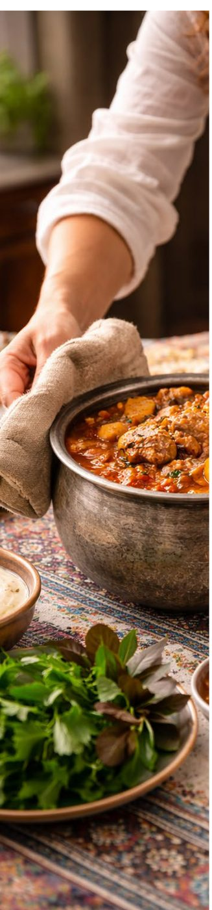

سوینج، نامی برآمده از فرهنگ غنی ما با معنای شادی و خوشحالی است؛ برندی که شادی را با کیفیت گره زده.

در سوینج، شادی با کیفیت گره خورده است. ما باور داریم بستهبندیها صرفاً نقش محافظ ندارند؛ آنها روایتگر لحظاتی هستند که خانوادهها با محصولات ما تجربه میکنند. لحظاتی که باید بالاترین سطح کیفیت، تازگی و حس خوب همراه باشند.
سوینج آمده است تا این حس را از اولین نگاه تا آخرین مصرف، حفظ کند. برند سوینج در سال ۱۳۸۶ در قلب آذربایجان شرقی، در شرکت طاق کسری شهرک شهید سلیمی، با یک تعهد استوار آغاز شد: بستهبندی نباید صرفا محافظ باشد؛ بلکه باید حامل شادی و آرامش باشد.
هر دانه پیش از بستهبندی بهطور کامل دستچین و پاکسازی میشود.
بدون هیچگونه ماده افزودنی، فقط حبوبات خالص و باکیفیت.
کنترل کیفیت در تمامی مراحل، از انتخاب دانه تا بستهبندی نهایی.
بستهبندیای که تازگی و کیفیت محصول را تا لحظه مصرف حفظ میکند.
برند سوینج در قلب آذربایجانشرقی، زیر نظر شرکت طاق کسری در شهرک صنعتی شهید سلیمی متولد شد.
ما تکنولوژی روز را صرفاً ابزار نمیبینیم، بلکه آن را در میدان نبرد خود برای توسعه مستمر و برتری رقابتی بهکار میگیریم.
سوینج فراتر از یک محصول است؛ نمادی از تعهد ما به ارتقاء مستمر تجربه مصرفکننده ایرانی.
مجموعه کامل ۹ نوع حبوبات دستچینشده در انتظار شماست.